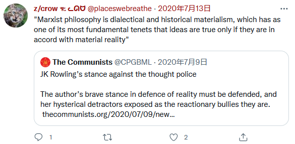

Does material reality exist?
I do think that it is very important that all our discussions are rooted in material reality. And we have to ask ourselves: do we think that a material reality exists? Because there is the question, a fundamental question of philosophy, which underlies everything.
It’s why dialectics is so very powerful. I don’t want to go on about it. It wasn’t me who invented dialectics, but I am a firm adherent of it; of the revolutionary teachings of Karl Marx.
Dialectical materialism didn’t come naturally to me because my father happened to be a Marxist, or my mother happened to be a Marxist. You have to win that ideological bedrock through study; through really struggling with ideas and understanding.
I grew up in bourgeois society – just like everyone else. So when I was taught chemistry, when I learned and went to school, I quite liked some subjects and I didn’t like others. I realised after a while it was mainly my relationship with certain teachers that determined my enjoyment of certain subjects. But I had a flair for science.
I found out, actually, that I enjoyed studying history and politics more, but I argued with my schoolteachers; they would send me out of the class for disagreeing in a way they felt was antisocial. They couldn’t control the class. So I gave up those subjects and I concentrated on the sciences, thinking that science at least is objective; no-one will argue over the question: is two plus two equal to four?
Lenin quite rightly told us that “if geometrical axioms affected human interests, attempts would certainly be made to refute them”.
What did he mean? There are simple formulas that tell one the volume of a sphere, or how to work out the area of a triangle: half the base times the height. Does anyone fundamentally disagree with that? If a circle thinks it’s a square, is it a square? What a stupid thing to say; no-one’s saying that!
Why can’t a circle self-identify as a square? Is there not some kind of shape fluidity between circles and squares? Are they not fundamentally the same? They all fundamentally consist of area. Why do we differentiate between them at all? Why has humanity worried to define objects as green or blue?
Is there a material reality? There are those who will argue there is no material reality; we are not among them. That is not a Marxist concept.
